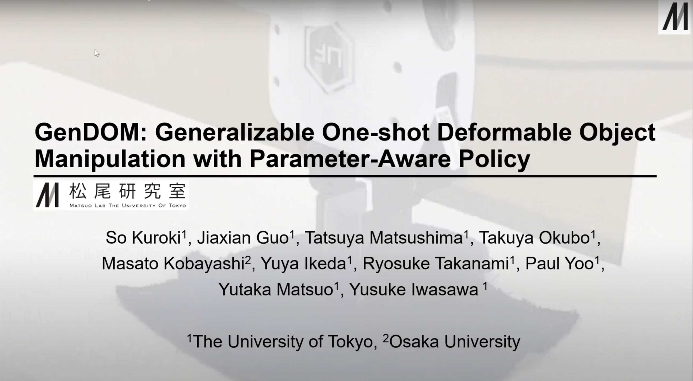
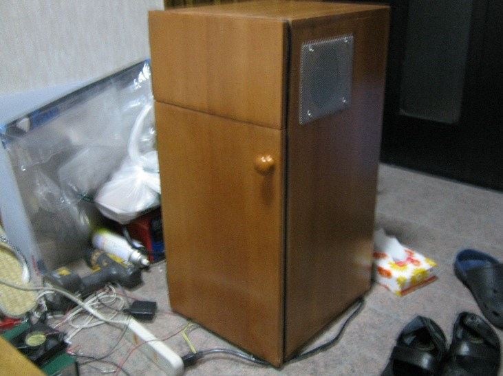
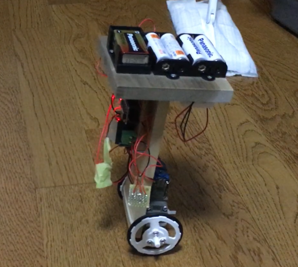
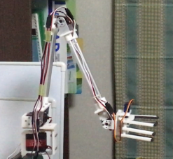
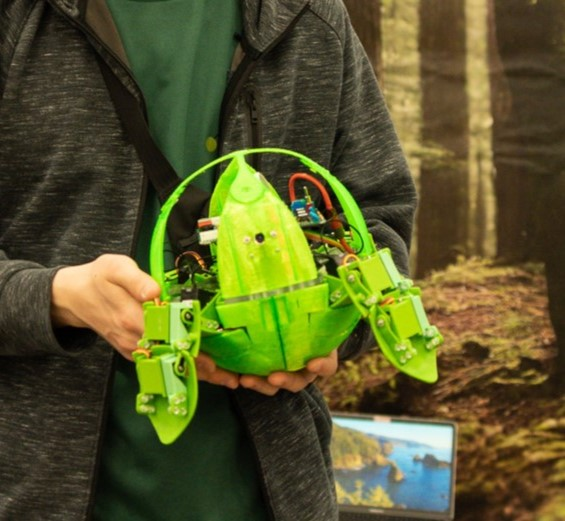
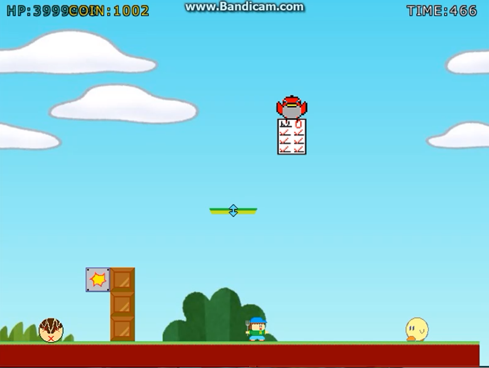

Takuya Okubo
大久保 拓哉
takuyaokubo069@gmail.com
current working

幼少期からモノづくり・電子工作が趣味で、ペルチェ式冷蔵庫やロボットアーム、倒立振子などを製作。趣味が高じて群馬高専の電子情報工学科に入学し、回路学やプログラミングなどの専門知識を学ぶとともに、経験を積むためにゲームの制作や競技プログラミングコンテストに出場。現在は高専、東大計数工学科を卒業し、東大情報理工学系研究科システム情報学専攻に所属。縁あって松尾研究室TRAIL（Tokyo Robotics and AI Lab）に所属し、ロボットの高機能化に向けた研究・開発に取り組んでいる。
paragraph2
CV / Email / LinkedIn / GitHub / Twitter (X)
Research
-
GenDOM: Generalizable One-shot Deformable Object Manipulation
So Kuroki, Jiaxian Guo, Tatsuya Matsushima, Takuya Okubo, et al.
1. 柔軟物のヤング率などのパラメータをデモから推定、2. シミュレータにパラメータを反映、3. 反映したシミュレータで学習、というパイプラインにより汎化可能な柔軟物のマニピュレーションが実現できることを提案・示した論文。私は柔軟物の点群処理・ロボットアームの制御関連のエンジニアリングのお手伝いをしました。
Hardware
-

-
車輪型倒立振子
趣味で作った車輪型倒立振子です。制御はPID制御をベースに、一部適応制御的な要素を含めたものを使用しています。 マイコンはArduino Nano, IMUはMPU6050を使用しています。 -
ロボットアーム
趣味で作った４自由度+グリッパー1自由度のロボットアームです。コントローラを使って操作できます。 Arduino Nanoを使って幾何学的に解いた逆運動学を用いて位置制御を実現しています。 -
球体型４脚ロボット（NetBall）
チームSAVERSで製作した球体型４脚ロボット（名称：NetBall）です。私は主に制御（と設計・回路の一部）を担当しました。歩行・カメラを使った遠隔モニタリング・人追従ができます。東京大学 産学協創推進本部主催の「Todai To Texas」に採用され、2024年3月にアメリカのテキサス州で開催されるSXSWに出展しました。
Software
-
マリオ風2D横スクロールアクションゲームの制作
群馬高専での文化祭（工華祭）の展示物として、チームで制作したマリオ風2D横スクロールアクションゲームです。 私はリーダとして包括的なプログラムの作成を担当しました。言語はC++で、グラフィクスの描画にはDXライブラリを用いています。 -
陣取りゲーム「巡りマス」のアルゴリズム開発
2018年全国高等専門学校プログラミングコンテスト競技部門のゲーム「巡りマス」にチームで出場するに当たって、ゲーム攻略用のアルゴリズムの開発を担当しました。 -
疲労度を考慮した予定推薦アプリの開発
100 Programと呼ばれる学生支援プログラムに参加し、チームを組んで疲労度を考慮した予定推薦アプリを開発しました。私は主にアルゴリズムの考案と実装を担当しました。 -